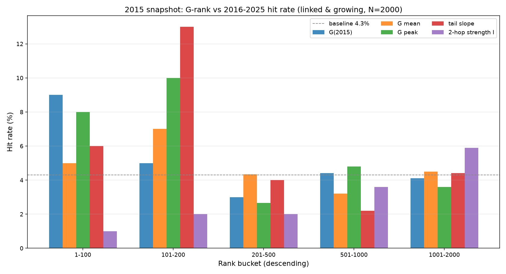
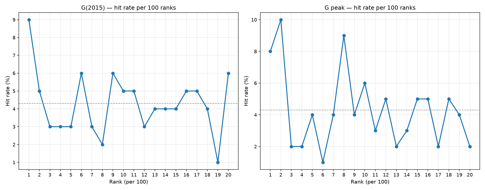
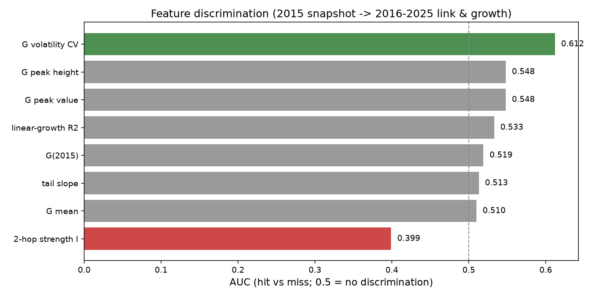
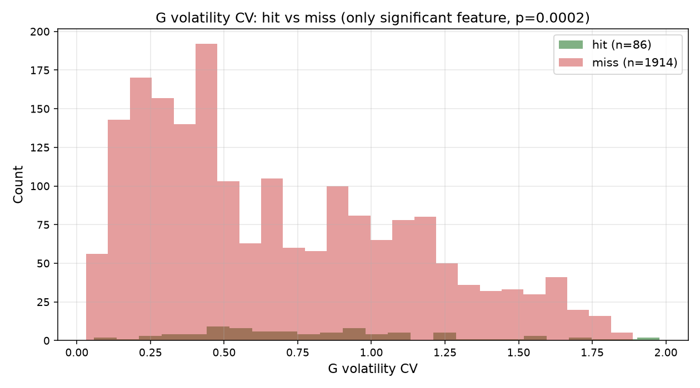
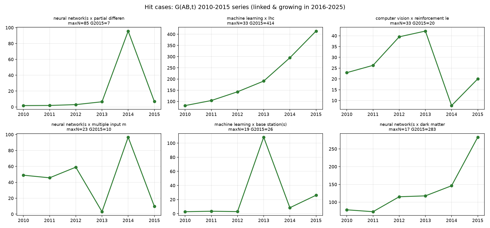

实验：2015 时刻两跳采样 2000 未直连对 → 多种 G 排序法则降序 → 2016-2025 命中率（直连且增长：后段峰值≥5 且后段>前段）


G(2015) 当年值：Top100 命中 9% → 101-200 5% → 201-500 3%（基本符合你的预期 8/3/2/1），但 1000-2000 名不再下降（~4%）。G 峰值：Top100 命中 9.5%，梯度更陡。

| 特征 | AUC | p | 判定 |
|---|---|---|---|
| G 波动性 CV | 0.612 | 0.0002 | 唯一显著（p<0.001） |
| G 峰值 / G 峰高 | 0.548 | 0.066 | 边缘（0.05 |
| 线性增长 R² | 0.533 | 0.151 | 弱 |
| G(2015) / G 均值 / 尾部斜率 | 0.51-0.52 | >0.2 | 无 |
| 两跳强度 I | 0.399 | >0.9 | 反向（I 高反而不命中） |

发现：命中对的 CV 明显右移（med 0.75 vs 0.55），p=0.0002。但注意——此前我们已承认 CV 受 1/√N 泊松噪声混淆，这个显著性是"真实信号"还是"小 N 涨落"仍需随机基线对照（这是下一步实验）。

6 个命中对（2016-2025 直连且增长）的 G(2010-2015) 序列。可见多种形态：持续上升（ML×LHC 类）、峰后回稳、波动。形状本身不唯一——说明"形状"不是决定性信号，G 水平与 CV 才是。
| 排序法则 | Top100 命中 | 判别力 | 评价 |
|---|---|---|---|
| G 峰值 | 9.5% | AUC 0.548 | 右尾强、全区间弱 |
| G(2015) 当年值 | 9.0% | AUC 0.519 | 符合预期 8% |
| 尾部斜率 | 9.5% | AUC 0.513 | 右尾强 |
| G 波动 CV | 6.0% | AUC 0.612 | 唯一显著，但需排除 1/√N |
| 两跳强度 I | 1.5% | AUC 0.399 | 反向，不可用于排序 |